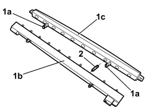

5550D17 THIRD BRAKE LIGHT BULB(S) - R.R
- Path
- Procedures > 55 ELECTRICAL EQUIPMENT > 5550 WARNING AND MANOEUVRING INDICATORS > 5550D BRAKE AND REVERSING LIGHTS > 5550D17 THIRD BRAKE LIGHT BULB(S) - R.R
- Kind
- repair procedure (removal / refitting; the operation number is the code)
- Applies to
- all engines; all production periods
- Interactive page
- https://sloeber94.github.io/elrnDB/alfa/159/en/#/939011053
Applies to: all engines; all production periods
 Removing
Removing
 Refitting
RefittingOp. 5550D16 THIRD BRAKE LIGHT - R+R
1. Release the retainers (1a) and separate the bulb holder (1b) from the light casing (1c).
2. Extract the bulb(s) involved from the bulb holder (press-fitting).

Applies to: all engines; all production periods
Refitting
Removing- Check that the bulbs are working.
- Fit the bulb(s) in the bulb holder.
- Fit the bulb holder in the light casing and attach the retainers.
Applies to: all engines; all production periods; only with equipment: Station Wagon
- The bulbs (LEDs) cannot be replaced individually.